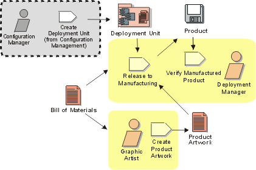

Disciplines >
Disciplines >
 Deployment >
Deployment >
 Workflow >
Package Product
Workflow >
Package Product
Disciplines >
Deployment >
Workflow >
Package Product
Workflow Detail:
|
Topics |
 |
The purpose of this workflow detail is to describe the necessary activities to create a "shrink-wrapped" product.
The idea is to take the deployment unit, installation scripts, and user manuals, then package them for mass production like any other consumer product.
Apart from the software logistics people like the Deployment Manager, this
workflow detail calls for the product image-makers such as the technical
"copy" writers and graphic artists to lend their talents to add to the
product's visual appeal as it competes for consumer attention. Also required is
handing off of the product to manufacturing, who will produce the product in
massive quantities.
|
Rational Unified
Process
|